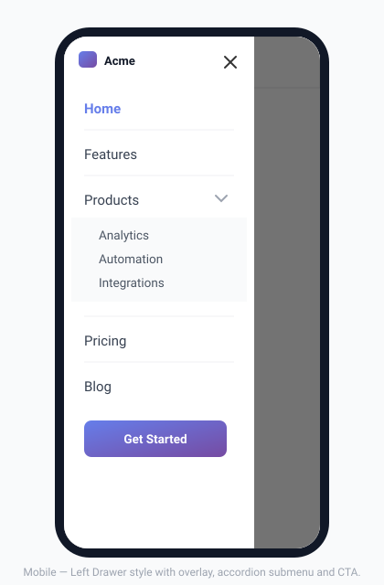

Mobile Menus
Choose from four distinct mobile menu styles and configure exactly how your navigation behaves on small screens — all without touching CSS or JavaScript.

Setting the breakpoint
The breakpoint is the viewport width below which the desktop menu hides and the mobile menu appears. Set it in Menu Builder → Mobile.
The default is 768 px (standard tablet/mobile boundary). Enter any pixel value that suits your layout, or choose Auto to let the plugin detect the available space dynamically.
The mobile menu styles
1. Dropdown Default
The most common style. Menu items stack vertically in a classic dropdown panel directly below the menu bar. Sub-items indent under their parent.
- Familiar and universally understood
- Works well for menus with many items
- Best for: blogs, corporate sites, portfolios
2. Fullscreen
The menu items are centered on a full-screen overlay that covers the entire viewport. Large typography, lots of breathing room.
- Dramatic and modern feel
- Best for sites with 5–8 top-level items maximum
- Best for: agencies, photographers, landing pages
3. Drawer — Left
A panel slides in from the left edge of the screen, partially overlapping the page content. The rest of the page dims but remains partially visible.
- Familiar from mobile apps (e.g. Gmail, Google Maps)
- Good for deep navigation hierarchies
- Best for: e-commerce, portals, documentation sites
4. Drawer — Right
Same as the Left Drawer but slides in from the right edge. Useful when your hamburger button sits on the right side of the bar and a left-aligned panel would feel counterintuitive.
Switch between styles in Menu Builder → Mobile. The change takes effect immediately — no need to re-publish your menu.
Hamburger button
The hamburger (☰) button is the toggle that opens and closes the mobile menu. Configure it in the Menu Builder → Mobile section:
| Option | Description |
|---|---|
| Icon style | Classic (3 lines), Modern (rounded), or Minimal (thin). |
| Alignment | Left, center, or right of the mobile nav bar. |
| Icon color | Independent from the menu item color. |
| Button background | Optional background color behind the hamburger icon. The plugin forces a transparent default so your theme’s button styles don’t bleed through. |
Mobile link colors
You can give the links inside the mobile menu their own colors, completely independent from the desktop menu. Find three dedicated color pickers in Style → Hamburger → Mobile link text:
- Normal — default link color inside the mobile menu
- Hover — color when the link is touched or hovered
- Active — color for the currently active item
Leave any field empty to inherit the desktop menu colors.
Sub-menu behavior on mobile
When a menu item has sub-items, you can control how they expand on mobile with the accordion option:
- Accordion on — only one sub-menu can be open at a time. Opening one automatically closes the others. Recommended for long menus.
- Accordion off (default) — multiple sub-menus can stay expanded at once.
Set this in the Menu Builder → Mobile section.
Mega menus on mobile
When a top-level item has a mega menu enabled, tapping it on mobile slides in a dedicated full-screen panel showing only those links — with a ← back button at the top. This gives the navigation a native app feel (similar to large retail sites) while keeping the list clean and readable.
You can control mega menu mobile behavior per item from the ⚡ Mega Menu panel:
- Visible on mobile (push-screen) — the default push navigation described above.
- Hidden on mobile — the mega panel is not rendered on small screens; sub-items are hidden entirely.
On mobile, per-item mega menu appearance overrides (background, colors, fonts) are automatically neutralised so links always render with the same neutral style as the rest of the mobile menu — avoiding broken color combinations from desktop presets.
Live phone preview
While you are in the Mobile tab of the admin panel, a sticky phone mockup on the right side of the screen updates in real time as you change any mobile setting — open style, overlay color, hamburger alignment, link color, drawer width, and more. No save required to see the effect.
The plugin automatically respects the prefers-reduced-motion CSS media query. If the visitor has enabled “Reduce motion” in their OS accessibility settings, all animations are disabled regardless of the setting above.